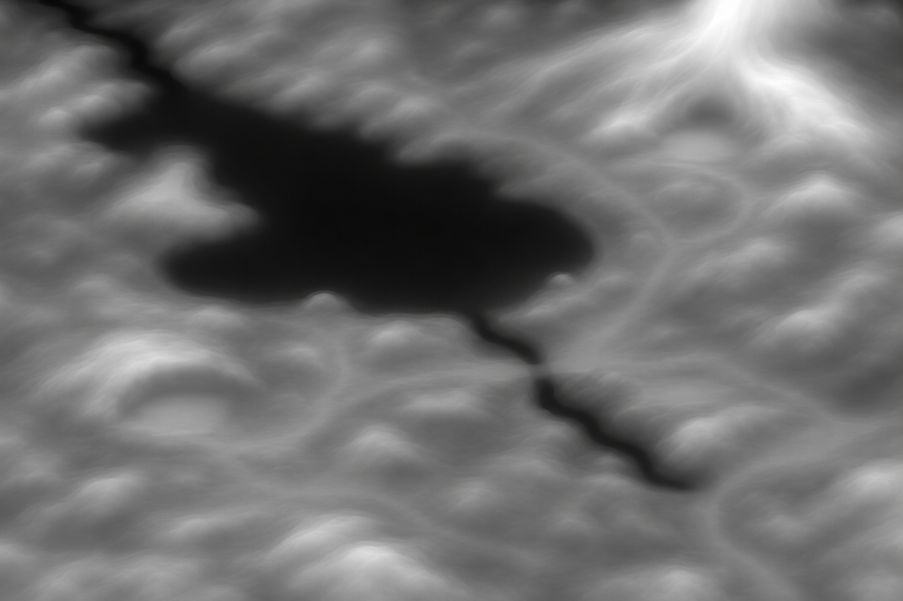
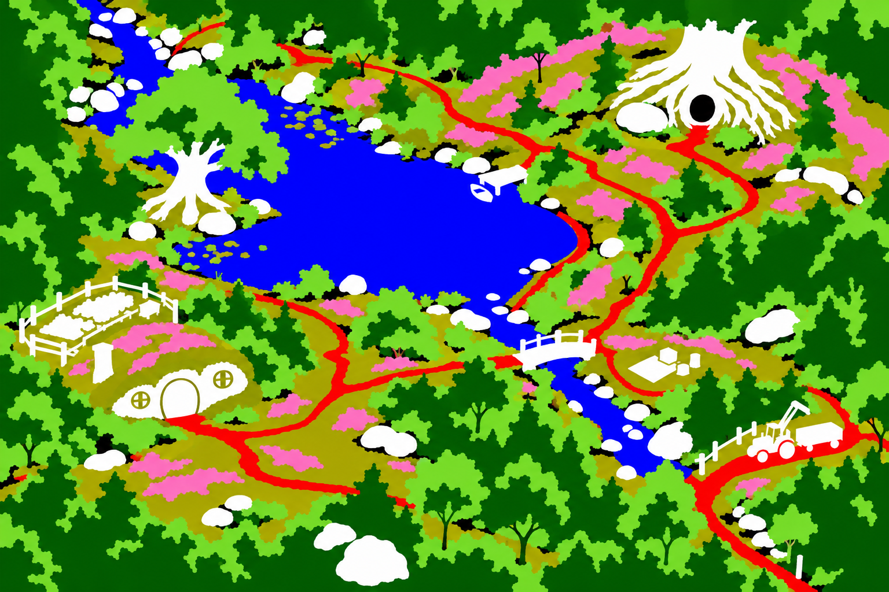

Version 2, generated by ChatGPT imagegen: bare-earth displacement · landcover, paths and placement seed · ground/landmark classes · channels and provenance. Runtime now consumes generated fields: coordinate/acceptance contract · height/ground/density grids · top-down inspection. Exact 1:1/book-style acceptance remains open.


Atlas ground-layout v2 and independent artwork checks: the bridge, tractor and walking route are migrated; broad terrain and vegetation consumers remain gated.
Not deployed game geometry. Artist-estimated height and placement guides are compiled in normalized image coordinates. These fields remain unqualified for terrain or vegetation use. The authored outdoor layout has a separate versioned correspondence; no metric elevation or surveyed stream is asserted.
The registered canon mask overrides generated placement holes: cottage, Elder and bridge/picnic footprints remain protected. Its red lake region also becomes flat water. Protection is transferred by normalized image bounds as a conservative guard; this does not validate the generated map’s spatial registration.
The generated mask uses blue water, red paths, green forest, white occupied areas and black meadow. Candidates are restricted to green forest with an exclusion margin. The oblique canopy illustration is for visual reference only and is never compiled into height.
Compiled fields, exact input hashes and limitations. Blue-water connectivity is a four-neighbor image diagnostic; disconnected or touching regions need artistic review.